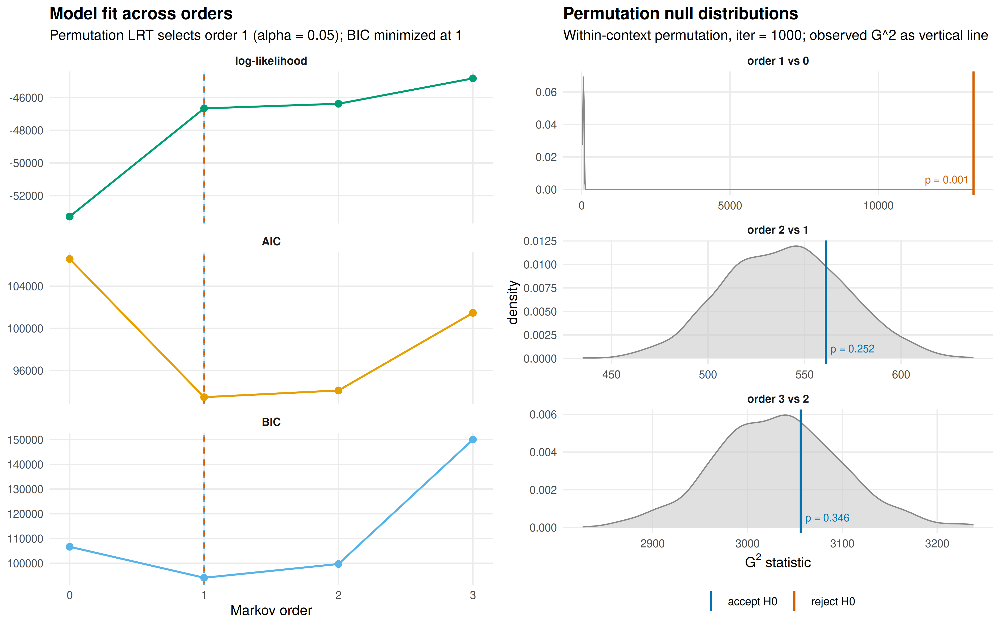
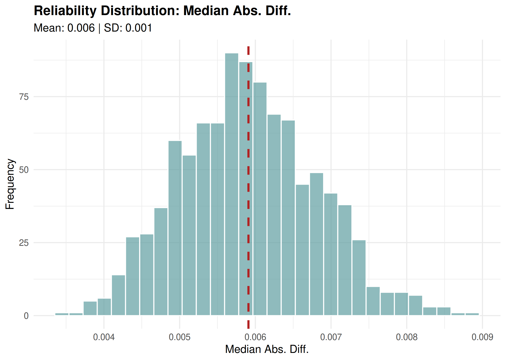
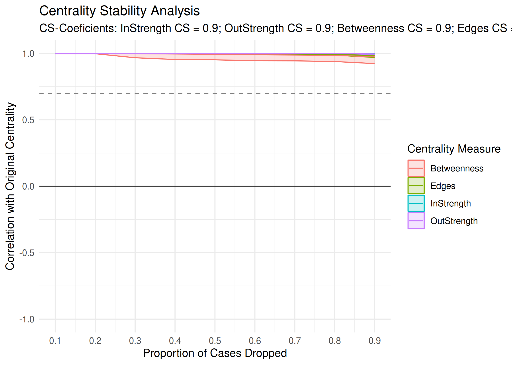
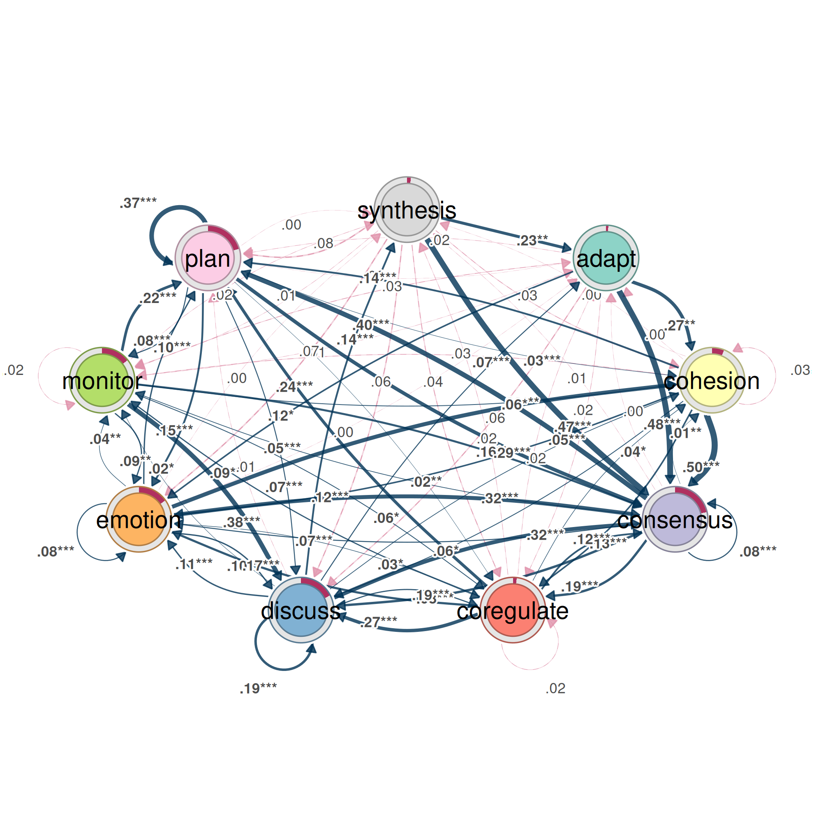
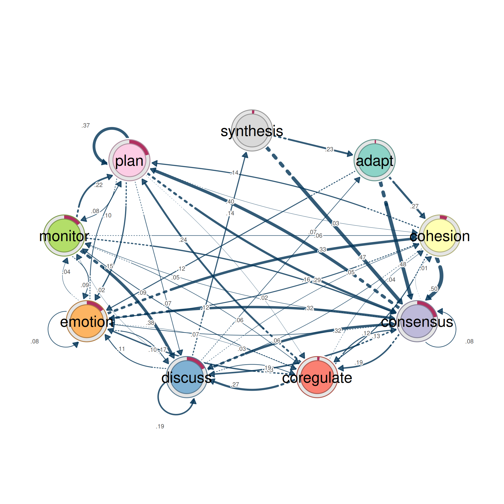
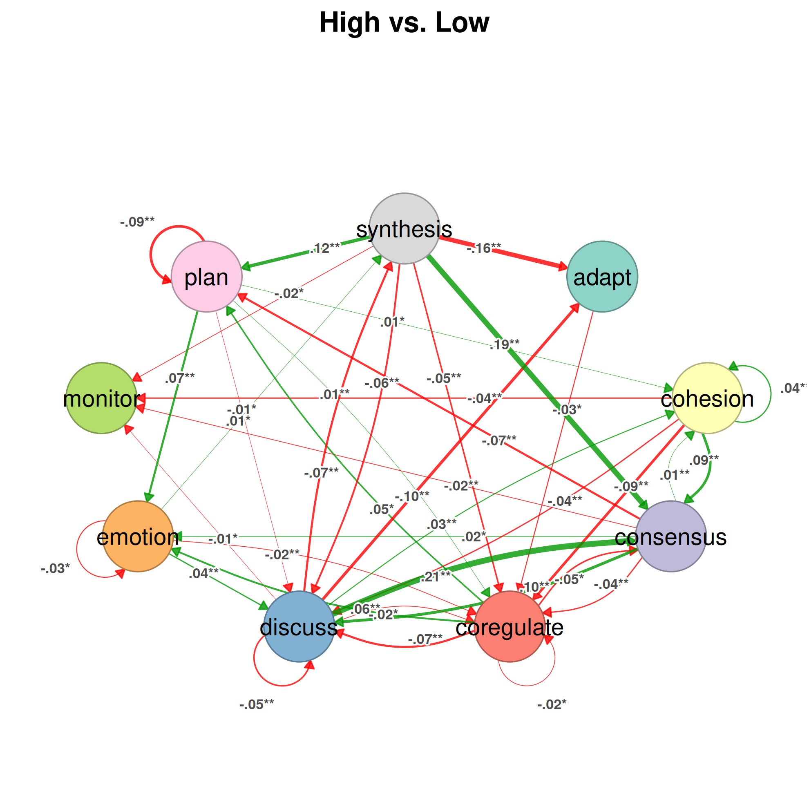
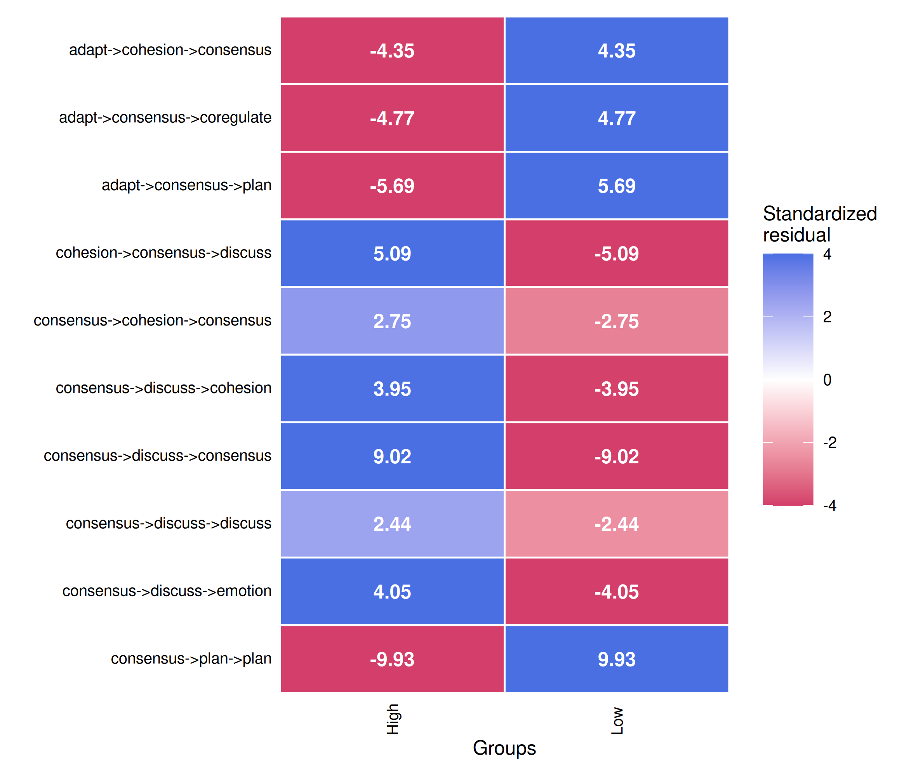

Validating a transition network
Source:vignettes/articles/model-validation.Rmd
model-validation.RmdA transition network estimated from empirical observations represents the structure and dynamics of a process as observed in a particular data set. Its structure and dynamics are, however, estimates, conditional on the sample from which they were obtained and on the analytical decisions, such as the coding scheme, that produced the data. The patterns of an estimated network cannot, therefore, establish by themselves whether they reflect systematic properties of the underlying process or idiosyncrasies of the available data.
Dynalytics addresses this problem through the scientific contract: an analytical conclusion is valid only when its supporting evidence matches the inference it is meant to support (Saqr, López-Pernas, & Misiejuk, 2026). The contract ties the scope of a claim to the evidence required to substantiate it. A claim about an individual transition requires evidence about that transition; a claim that groups differ requires a test that could have found no difference; and a claim about the temporal dependence of the process requires a test of the assumptions of the transition model. Descriptive observations, statistically supported comparisons, and evidence of stability answer different inferential questions, and one cannot stand in for another.
Within this framework, validation is a central part of transition network analysis, essential to sound inference and analytical rigor (Saqr et al., 2025; Tikka et al., 2025). The tna package provides a procedure for each level of inference, and together they determine whether an observed pattern warrants only a descriptive account, supports a comparative conclusion, or is stable enough to support a claim about the structure and dynamics of the underlying process:
| Level | Question | Procedure |
|---|---|---|
| Model choice | Does a one-step network suffice, or does the order of earlier events matter? | markov_order() |
| Model assessment | Would the network recur in another sample, and how much of the data can be removed before it changes? |
reliability(),
estimate_cs(edges = TRUE)
|
| Edge | Is a single transition stable rather than an artefact of a few sequences? |
bootstrap(), prune()
|
| Comparison | Do groups differ beyond what random assignment produces? |
permutation_test(),
compare_sequences()
|
| State | Is a state’s importance stable under changes in the sample, and does it differ between groups? |
estimate_cs(),
permutation_test(measures = )
|
The sections below follow the order in which this evidence is
assembled. The model is specified first; the reliability of the network
as a whole is then established; and only then are individual
transitions, group differences, and state-level properties interpreted.
Each level constrains the next, since a network that replicates as a
whole may still contain individual transitions that do not. All
resampling procedures also accept an actor argument for
data in which several sequences belong to the same individual or group,
which is addressed in the final section.
Data
The examples use group_regulation_long, a log of
collaborative regulation distributed with tna. Each of 2000 students
contributes one session, coded into nine regulation states. The students
are organized into 200 groups of ten, and the variable
Achiever records whether a group is high or low
achieving.
prepared <- prepare_data(
group_regulation_long,
actor = "Actor",
action = "Action",
time = "Time"
)
model <- tna(prepared)
achievers <- group_tna(prepared, group = "Achiever")model is the transition network of all students;
achievers contains one network for the high and one for the
low achievers.
1. Model choice: is a first-order model adequate?
A first-order transition network models the next state as dependent
on the current state alone. If earlier states also condition the next
one, a first-order edge averages over distinct histories, and its
interpretation as a single mechanism is unwarranted. The order of the
process is therefore established before any edge is examined.
markov_order() tests each order against the order below it:
for order k, it asks whether the state k steps back
still conditions the next state once the k − 1 most recent
states are known. The statistic is the likelihood ratio G², and
its p-value is obtained by permuting the next states within each
context, which preserves every count on which the null hypothesis
conditions. The order is increased for as long as the test rejects.
set.seed(1)
markov <- markov_order(model, max_order = 3, iter = 1000)
markov
#> Markov order test (1000 permutations per order, 2000 sequences, 27533 states)
#>
#> order loglik aic bic g2 df p_value p_asymptotic
#> 0 -53280.55 106577.10 106642.88
#> 1 -46660.94 93475.87 94109.05 13203.77 64 0.001 0.000
#> 2 -46377.27 94110.53 99685.82 561.07 532 0.252 0.185
#> 3 -44824.60 101463.19 150037.29 3056.22 3300 0.346 0.999
#> significant
#>
#> yes
#> no
#> no
#>
#> Selected order: 1 (sequential permutation tests at level 0.05)
#> Order with the lowest AIC: 1; lowest BIC: 1The first-order dependence is unambiguous (G² = 13,203.8 on 64 degrees of freedom, p = 0.001, the smallest value that 1000 permutations can yield). The second order adds no explanatory power (p = 0.25), and the sequential tests therefore select order 1. AIC and BIC reach their minima at orders 1 and 1, respectively, in agreement with the tests. A first-order network is an adequate representation of these data.
The left panel displays the log-likelihood, AIC, and BIC of the multi-order model across orders, marking the order selected by the tests (dashed) and the order that minimizes BIC (dotted). The right panel displays the permutation null distribution of each order together with the observed G², labelled with its p-value. The order-1 statistic lies far beyond its null distribution, whereas the order-2 and order-3 statistics fall within theirs.
plot(markov)
Because the sequential procedure stops at the first non-rejection, it
cannot detect a dependence on the state two steps back that the current
state does not reveal. markov_order() therefore issues a
warning, and a note with its results, when a higher order rejects or
when AIC or BIC select a different order. It also warns when
iter is too small for any p-value to fall below
level (fewer than 20 permutations at the 0.05 level).
Neither condition arises here.
A grouped model is tested group by group:
set.seed(2)
summary(markov_order(achievers, max_order = 2, iter = 1000))
#> group order loglik aic bic g2 df p_value p_asymptotic
#> High 0 -26084.40 52184.79 52245.00
#> High 1 -23001.71 46153.43 46717.93 6146.79 64 0.001 0.000
#> High 2 -22751.38 46792.76 51647.47 491.66 503 0.616 0.633
#> Low 0 -27055.17 54126.34 54186.61
#> Low 1 -23188.59 46525.19 47082.65 7714.71 64 0.001 0.000
#> Low 2 -22949.47 47154.95 51885.86 471.20 480 0.642 0.604
#> significant
#>
#> yes
#> no
#>
#> yes
#> noBoth groups require the first order and not the second, so the group-specific first-order networks compared in later sections are adequate models of their respective processes.
2. Model assessment: does the network recur in another sample?
With the model specified, the next question concerns the network as a
whole: whether its structure would recur in an independent sample.
reliability() partitions the sequences at random into two
halves of equal size, estimates a network from each half, and compares
the two. Because the halves share no data, their agreement is evidence
of replication rather than of overlap. Repeated across many partitions,
the procedure indicates how far two independent samples of this size
would diverge. Each partition is evaluated on 22 metrics covering
deviations between the weights, correlations, dissimilarities,
similarities, and agreement in the rank and sign of the weights.
set.seed(6)
rel <- reliability(model, iter = 1000)
rel
#> Reliability summary
#> # A tibble: 4 × 8
#> metric mean sd median min max q25 q75
#> <chr> <dbl> <dbl> <dbl> <dbl> <dbl> <dbl> <dbl>
#> 1 Mean Abs. Diff. 0.00957 0.00110 0.00952 0.00650 0.0152 0.00880 0.0103
#> 2 Median Abs. Diff. 0.00591 0.000904 0.00588 0.00344 0.00886 0.00527 0.00650
#> 3 Pearson 0.993 0.00227 0.993 0.977 0.997 0.992 0.995
#> 4 Bray-Curtis 0.0430 0.00495 0.0428 0.0293 0.0682 0.0396 0.0462print() reports four of these metrics;
summary() returns all of them, so that a category can be
selected:
reliability_metrics <- summary(rel)
subset(reliability_metrics, category == "Correlations")
#> category metric mean sd median min max
#> 7 Correlations Pearson 0.9930611 0.002265542 0.9934427 0.9767406 0.9974879
#> 8 Correlations Spearman 0.9873025 0.003141525 0.9876120 0.9749864 0.9940601
#> 9 Correlations Kendall 0.9206808 0.009581896 0.9209245 0.8859703 0.9477751
#> 10 Correlations Distance 0.9910419 0.002322931 0.9912982 0.9703414 0.9959655
#> q25 q75
#> 7 0.9919226 0.9946064
#> 8 0.9853884 0.9895726
#> 9 0.9144867 0.9275005
#> 10 0.9897751 0.9926568The two halves are in close agreement. The median Pearson correlation between their edge weights is 0.993, and in the least favourable of the 1,000 partitions it is 0.977. The weights of the two halves differ by 0.010 on average, on a scale on which the outgoing weights of each state sum to one. The histogram displays the distribution of the median absolute difference across partitions:
plot(rel)
A network estimated from half of these students reproduces the
network of the other half, which establishes the reliability of the
model as a whole. The argument types extends the comparison
to several model types in a single call, for example
types = c("relative", "frequency").
3. Model assessment: how much data can be removed?
Split-half reliability compares two independent samples of equal
size. Case-dropping addresses a complementary question: how much of the
data can be removed before the network and its centrality rankings
change. estimate_cs() removes increasing proportions of the
sequences (10% to 90%), re-estimates the network from the remainder, and
correlates the result with the original. The CS-coefficient is the
largest proportion that can be removed while the correlation remains
above 0.7 in 95% of the draws. A CS-coefficient of at least 0.5 supports
interpretation; a value below 0.25 does not. With
edges = TRUE, the edge weights are assessed alongside the
centralities, restricted to the edges present in the network: a
subsample cannot contain a transition absent from the full data, so the
empty cells would agree in every draw and inflate the apparent stability
of any network.
set.seed(5)
stability <- estimate_cs(
model,
measures = c("InStrength", "OutStrength", "Betweenness"),
iter = 1000,
edges = TRUE
)
cs <- summary(stability)
cs
#> measure cs_coefficient
#> 1 InStrength 0.9
#> 2 OutStrength 0.9
#> 3 Betweenness 0.9
#> 4 Edges 0.9Every CS-coefficient reaches the largest proportion tested: with 90% of the sequences removed, the edge weights and the three centrality measures still correlate above 0.7 with the full network in 95% of the draws. With 2,000 sequences, both the edge weights and the centrality rankings are stable enough to be reported. The plot displays the mean correlation at each proportion together with the central 95% of the draws:
plot(stability)
4. Edges: which transitions are reliable?
A network that replicates as a whole may still contain individual
transitions that do not. Each edge weight is an estimate, and another
sample would yield a somewhat different transition probability.
bootstrap() resamples the sequences with replacement,
re-estimates the network in each sample, and records every weight,
reporting for each edge a 95% percentile confidence interval and a
p-value.
The p-value depends on method. Under the default
method = "stability", an edge is considered reliable when
its weight remains within ±25% of the observed value
(consistency_range = c(0.75, 1.25)) in at least 95% of the
samples; the p-value is the proportion of samples that fall outside this
range.
set.seed(3)
boot <- bootstrap(model, iter = 1000)
edges <- summary(boot)
subset(edges, !sig)
#> from to weight p_value sig cr_lower cr_upper
#> 2 cohesion adapt 0.0029498525 0.49650350 FALSE 0.0022123894 0.003687316
#> 3 consensus adapt 0.0047400853 0.17482517 FALSE 0.0035550640 0.005925107
#> 4 coregulate adapt 0.0162436548 0.17182817 FALSE 0.0121827411 0.020304569
#> 6 emotion adapt 0.0024673951 0.54645355 FALSE 0.0018505464 0.003084244
#> 7 monitor adapt 0.0111653873 0.31668332 FALSE 0.0083740405 0.013956734
#> 8 plan adapt 0.0009745006 0.55444555 FALSE 0.0007308754 0.001218126
#> 11 cohesion cohesion 0.0271386431 0.11688312 FALSE 0.0203539823 0.033923304
#> 18 synthesis cohesion 0.0337423313 0.23976024 FALSE 0.0253067485 0.042177914
#> 28 adapt coregulate 0.0216110020 0.42657343 FALSE 0.0162082515 0.027013752
#> 31 coregulate coregulate 0.0233502538 0.09690310 FALSE 0.0175126904 0.029187817
#> 36 synthesis coregulate 0.0444785276 0.19380619 FALSE 0.0333588957 0.055598160
#> 37 adapt discuss 0.0589390963 0.15984016 FALSE 0.0442043222 0.073673870
#> 45 synthesis discuss 0.0628834356 0.11188811 FALSE 0.0471625767 0.078604294
#> 54 synthesis emotion 0.0705521472 0.09990010 FALSE 0.0529141104 0.088190184
#> 55 adapt monitor 0.0333988212 0.29170829 FALSE 0.0250491159 0.041748527
#> 56 cohesion monitor 0.0330383481 0.06293706 FALSE 0.0247787611 0.041297935
#> 61 monitor monitor 0.0181437544 0.17682318 FALSE 0.0136078158 0.022679693
#> 63 synthesis monitor 0.0122699387 0.46553447 FALSE 0.0092024540 0.015337423
#> 64 adapt plan 0.0157170923 0.46353646 FALSE 0.0117878193 0.019646365
#> 68 discuss plan 0.0116426221 0.08191808 FALSE 0.0087319666 0.014553278
#> 72 synthesis plan 0.0751533742 0.06993007 FALSE 0.0563650307 0.093941718
#> 74 cohesion synthesis 0.0035398230 0.55344655 FALSE 0.0026548673 0.004424779
#> 75 consensus synthesis 0.0075841365 0.07492507 FALSE 0.0056881024 0.009480171
#> 76 coregulate synthesis 0.0187817259 0.12587413 FALSE 0.0140862944 0.023477157
#> 78 emotion synthesis 0.0028198802 0.48351648 FALSE 0.0021149101 0.003524850
#> 79 monitor synthesis 0.0160502442 0.24575425 FALSE 0.0120376832 0.020062805
#> 80 plan synthesis 0.0017865844 0.40559441 FALSE 0.0013399383 0.002233230
#> ci_lower ci_upper
#> 2 0.0005972741 0.005592700
#> 3 0.0031044576 0.006482952
#> 4 0.0109609533 0.022545188
#> 6 0.0010171118 0.004456825
#> 7 0.0058426221 0.017045648
#> 8 0.0003176194 0.001782856
#> 11 0.0187891718 0.035477977
#> 18 0.0213064352 0.048747348
#> 28 0.0098785280 0.034284686
#> 31 0.0164291290 0.030402583
#> 36 0.0288450000 0.062312280
#> 37 0.0394446845 0.079918133
#> 45 0.0436014914 0.083202572
#> 54 0.0508714771 0.091203850
#> 55 0.0183444537 0.048487302
#> 56 0.0242310738 0.041646233
#> 61 0.0121400879 0.025094108
#> 63 0.0046798233 0.021053058
#> 64 0.0059517928 0.027349133
#> 68 0.0086612225 0.015058931
#> 72 0.0540947826 0.094553431
#> 74 0.0011553017 0.006544016
#> 75 0.0055585136 0.009702808
#> 76 0.0127863461 0.024659315
#> 78 0.0010604173 0.004977292
#> 79 0.0094583462 0.023338048
#> 80 0.0008170937 0.002884339Of the 78 edges, 51 are reliable and the 27 listed above are not. The
unreliable edges are the weak ones: their median weight is 0.016,
compared with 0.119 for the reliable edges. A weak edge fails because a
small transition probability cannot be estimated to within 25%, not
necessarily because the transition is absent. The confidence intervals
confirm this: the interval of every one of these 27 edges excludes zero
(ci_lower is above 0), and the interval of every one
extends beyond the ±25% range (cr_lower,
cr_upper).
In the plot, every edge is drawn: the reliable edges as solid lines marked with stars, the remainder as grey dashed lines.
plot(boot)
#> Registered S3 method overwritten by 'cograph':
#> method from
#> plot.tna_bootstrap tna
The alternative method addresses a different question. Under
method = "threshold", an edge is considered reliable when
its weight remains above threshold (by default the 10th
percentile of the edge weights) in at least 95% of the samples:
set.seed(4)
boot_threshold <- bootstrap(model, iter = 1000, method = "threshold")
nrow(subset(summary(boot_threshold), sig))
#> [1] 7171 edges pass the threshold test, 20 more than pass the stability test. The threshold test establishes whether a transition reliably exists; the stability test establishes whether its weight is estimated precisely. The stability test is appropriate when the weights themselves are interpreted, and the threshold test when only the presence of a transition is at issue.
Pruning the network to the reliable edges
prune() removes the edges that the bootstrap does not
support. Supplying the bootstrap result reuses it, so that the pruned
network retains exactly the reliable edges identified above:

The pruned network has 51 edges, against 78 in the full network.
pruning_details() lists the removed edges,
deprune() restores them, and reprune() removes
them again, so that either version can be displayed without repeating
the bootstrap.
prune() also offers three methods that involve no
resampling: a fixed weight threshold, the
lowest proportion of weights, and the disparity filter,
which retains the edges that carry a disproportionate share of a state’s
outgoing weight:
disparity <- prune(model, method = "disparity", level = 0.5)
subset(summary(disparity), metric == "Edge Count")
#> # A tibble: 1 × 2
#> metric value
#> <chr> <dbl>
#> 1 Edge Count 38The disparity filter retains 38 of the 78 edges. These methods reduce the density of a network for display, but they carry no information about sampling error; only bootstrap pruning removes the edges that another sample might fail to reproduce.
5. Comparison: do the groups differ?
A claim that two groups differ requires a test that could have found
no difference. permutation_test() asks whether high and low
achievers differ by more than random reassignment of the sequences to
the two groups would produce. For every edge, it compares the observed
difference in weight with the distribution of differences under permuted
group labels; with measures, it does the same for
centrality measures. The effect size is the observed difference divided
by the standard deviation of the permuted differences.
The test is conducted on every edge simultaneously, here 81 tests.
Under the default adjust = "none", about 4 of the 81 edges
would reach significance at the 0.05 level even if the groups did not
differ. An adjustment for multiple comparisons is therefore required;
"fdr" controls the false discovery rate:
set.seed(7)
permutation <- permutation_test(
achievers,
iter = 1000,
adjust = "fdr",
measures = c("InStrength", "Betweenness")
)
edge_differences <- summary(permutation)
subset(edge_differences, p_value < 0.05)
#> pair from to diff_true effect_size p_value
#> 5 High vs. Low discuss adapt -0.10 -11.11 0.003371628
#> 9 High vs. Low synthesis adapt -0.16 -4.66 0.003371628
#> 11 High vs. Low cohesion cohesion 0.04 4.53 0.003371628
#> 12 High vs. Low consensus cohesion 0.01 3.48 0.003371628
#> 14 High vs. Low discuss cohesion 0.03 4.37 0.003371628
#> 17 High vs. Low plan cohesion 0.01 2.96 0.010441172
#> 20 High vs. Low cohesion consensus 0.09 3.58 0.005779934
#> 22 High vs. Low coregulate consensus -0.05 -3.00 0.010441172
#> 23 High vs. Low discuss consensus 0.21 14.21 0.003371628
#> 27 High vs. Low synthesis consensus 0.19 4.83 0.003371628
#> 28 High vs. Low adapt coregulate -0.03 -2.39 0.034071192
#> 29 High vs. Low cohesion coregulate -0.09 -5.26 0.003371628
#> 30 High vs. Low consensus coregulate -0.04 -3.68 0.003371628
#> 31 High vs. Low coregulate coregulate -0.02 -2.57 0.041496965
#> 32 High vs. Low discuss coregulate -0.02 -2.66 0.017164654
#> 33 High vs. Low emotion coregulate -0.02 -3.41 0.003371628
#> 35 High vs. Low plan coregulate 0.01 3.69 0.003371628
#> 36 High vs. Low synthesis coregulate -0.05 -3.20 0.005779934
#> 38 High vs. Low cohesion discuss -0.04 -3.83 0.003371628
#> 39 High vs. Low consensus discuss 0.10 9.08 0.003371628
#> 40 High vs. Low coregulate discuss -0.07 -3.49 0.003371628
#> 41 High vs. Low discuss discuss -0.05 -4.13 0.003371628
#> 42 High vs. Low emotion discuss 0.04 3.68 0.003371628
#> 44 High vs. Low plan discuss -0.01 -2.23 0.046528472
#> 45 High vs. Low synthesis discuss -0.06 -3.03 0.005779934
#> 48 High vs. Low consensus emotion 0.02 2.79 0.020229770
#> 49 High vs. Low coregulate emotion 0.06 3.18 0.005779934
#> 51 High vs. Low emotion emotion -0.03 -2.91 0.015172328
#> 53 High vs. Low plan emotion 0.07 7.22 0.003371628
#> 56 High vs. Low cohesion monitor -0.04 -4.18 0.003371628
#> 57 High vs. Low consensus monitor -0.02 -4.60 0.003371628
#> 59 High vs. Low discuss monitor -0.01 -2.51 0.020229770
#> 63 High vs. Low synthesis monitor -0.02 -2.55 0.010441172
#> 66 High vs. Low consensus plan -0.07 -5.59 0.003371628
#> 67 High vs. Low coregulate plan 0.05 2.52 0.032805033
#> 71 High vs. Low plan plan -0.09 -6.72 0.003371628
#> 72 High vs. Low synthesis plan 0.12 5.84 0.003371628
#> 77 High vs. Low discuss synthesis -0.07 -6.31 0.003371628
#> 78 High vs. Low emotion synthesis 0.01 2.66 0.019039784
#> 80 High vs. Low plan synthesis 0.00 2.92 0.003371628After adjustment, 40 of the 81 transitions differ between high and low achievers. The differences are substantial: 27 of them have an absolute effect size above 3, meaning that the observed difference lies more than three standard deviations from the differences produced by random grouping.
The plot displays the differences that remain significant after adjustment, positive where high achievers have the larger weight:
plot(permutation)
The centrality measures are tested in the same procedure, and
summary() returns them with
what = "centralities":
centrality_differences <- summary(permutation, what = "centralities")
subset(centrality_differences, p_value < 0.05)
#> pair state centrality diff_true effect_size p_value
#> 1 High vs. Low adapt InStrength -0.24 -6.50 0.002568860
#> 3 High vs. Low consensus InStrength 0.54 7.70 0.002568860
#> 4 High vs. Low coregulate InStrength -0.25 -7.56 0.002568860
#> 6 High vs. Low emotion InStrength 0.19 3.98 0.002568860
#> 7 High vs. Low monitor InStrength -0.09 -3.36 0.005994006
#> 8 High vs. Low plan InStrength 0.12 2.58 0.027790391
#> 9 High vs. Low synthesis InStrength -0.05 -3.21 0.004495504
#> 10 High vs. Low adapt Betweenness -3.00 -6.19 0.002568860
#> 12 High vs. Low consensus Betweenness 5.00 6.51 0.002568860
#> 15 High vs. Low emotion Betweenness 2.00 13.85 0.002568860
#> 18 High vs. Low synthesis Betweenness 7.00 18.25 0.0071928077 of the nine states differ in in-strength, that is, in the share of the regulation process that flows into them, and 4 in betweenness.
Differences in edge betweenness
The edge betweenness of a transition counts the shortest paths
between other states that pass through it, and thereby identifies the
transitions on which the process depends to move between states.
betweenness_network() replaces each weight with its edge
betweenness, and the permutation test recomputes edge betweenness in
every permutation:
set.seed(8)
betweenness <- permutation_test(
betweenness_network(achievers),
iter = 1000,
adjust = "fdr"
)
bridge_differences <- summary(betweenness)
subset(bridge_differences, p_value < 0.05)
#> pair from to diff_true effect_size p_value
#> 5 High vs. Low discuss adapt -9 -23.47 0.01348651
#> 9 High vs. Low synthesis adapt 6 9.82 0.04045954
#> 10 High vs. Low adapt cohesion -2 -25.81 0.01348651
#> 15 High vs. Low emotion cohesion 2 14.91 0.01348651
#> 20 High vs. Low cohesion consensus 4 13.96 0.01348651
#> 29 High vs. Low cohesion coregulate -4 -13.96 0.01348651
#> 40 High vs. Low coregulate discuss -2 -5.21 0.01348651
#> 77 High vs. Low discuss synthesis 7 18.19 0.04045954After adjustment, 8 transitions carry a different number of shortest paths in the two groups: the groups route their regulation through partly different bridges.
Differences in sequence patterns
Patterns of two states are the transitions already compared by
permutation_test(). compare_sequences()
extends the comparison to longer patterns: it counts the subsequences of
consecutive states of the specified lengths in each group and tests the
differences in their proportions by permutation. Here it compares
patterns of three to five states. Its default adjustment, Bonferroni, is
conservative when the number of patterns is large:
set.seed(9)
patterns_bonferroni <- compare_sequences(achievers, sub = 3:5, iter = 1000)
nrow(subset(patterns_bonferroni, p_value < 0.05))
#> [1] 0No pattern reaches significance. Bonferroni multiplies each p-value by the number of patterns of the same length, which here runs into the hundreds, whereas 1,000 permutations cannot yield a p-value below 1/1001; the smallest adjusted p-value is 0.573. Under the false discovery rate:
set.seed(9)
patterns <- compare_sequences(
achievers,
sub = 3:5,
iter = 1000,
adjust = "fdr"
)
nrow(subset(patterns, p_value < 0.05))
#> [1] 6262 of the 842 patterns of three to five states differ between the groups. The rows are ordered by p-value, and the plot displays the standardized residuals of the counts of the first ten patterns in each group:
plot(patterns)
When many patterns are compared, the false discovery rate should be
used, or iter raised until the Bonferroni-adjusted p-values
can fall below the significance level.
6. Sequences nested in actors
All resampling procedures assume that the sequences are independent.
When several sequences belong to the same unit, such as the sessions of
one student or the students of one group, they tend to resemble one
another, and treating them as independent yields confidence intervals
that are too narrow and p-values that are too small. The argument
actor identifies the unit, either as a column of the data
from which the model was estimated or as a vector with one value per
sequence. The bootstrap then resamples whole actors (a cluster
bootstrap), the permutation test reassigns whole actors between groups,
case-dropping removes whole actors, and split-half reliability assigns
all sequences of an actor to the same half.
In these data, achievement is a property of the group: all ten students of a group are either high or low achievers. Because the unit assigned to the condition is the group, the permutation test should reassign whole groups:
set.seed(10)
permutation_groups <- permutation_test(
achievers,
iter = 1000,
adjust = "fdr",
actor = "Group"
)
nrow(subset(summary(permutation_groups), p_value < 0.05))
#> [1] 39
set.seed(11)
boot_groups <- bootstrap(model, iter = 1000, actor = "Group")
with(summary(boot), median(ci_upper - ci_lower))
#> [1] 0.02140187
with(summary(boot_groups), median(ci_upper - ci_lower))
#> [1] 0.02231945When whole groups are reassigned, the permutation test identifies 39
differing transitions, compared with 40 when students are reassigned
individually, and the confidence intervals of the cluster bootstrap are
only 4% wider than those of the ordinary bootstrap (median width). In
these data the students of a group are no more alike than students of
different groups, so the nesting has little effect and the conclusions
of the preceding sections stand. This is an empirical finding rather
than an assumption. When the sequences of a unit do resemble one
another, as the sessions of a single student commonly do, specifying
actor distinguishes a valid test from an overconfident one,
and it should be specified whenever the data are nested.
A related restriction concerns scaled weights. A grouped model
estimated with scaling (for example
group_model(..., scaling = "minmax")) is not resampled, nor
are the networks it contains: scaling across groups depends on every
group, which a resample of a single group cannot reproduce. Groups
should be estimated without scaling for validation.
Matching claims to evidence
The question determines the level, and the level determines the procedure. Each statement in a report should be assigned to its level and matched to the procedure that supports it; a statement and a procedure at different levels indicate an error in one of them.
-
Model choice.
markov_order()precedes every other analysis. If it selects an order above one, a first-order network averages over distinct histories, and subsequent results describe an incomplete model. -
Model assessment.
reliability()establishes that the network would recur in an independent sample, andestimate_cs(edges = TRUE)how much of the data can be lost before the edge weights change; a CS-coefficient of at least 0.5 should be reported. -
Edge.
bootstrap()is required before a single transition is interpreted, andprune(boot = )restricts a figure to the reliable transitions.method = "stability"is appropriate when the weights are interpreted, andmethod = "threshold"when only the presence of a transition is. -
Comparison.
permutation_test()withadjust = "fdr"supports a claim that groups differ;betweenness_network()precedes it when the question concerns the transitions that act as bridges, andcompare_sequences()withsub = 3:5when it concerns patterns longer than a single transition. -
State.
estimate_cs()is required before centrality rankings are interpreted, andpermutation_test(measures = )before a state’s importance is claimed to differ between groups. -
Nesting.
actorshould be specified in every procedure whenever several sequences belong to the same individual or group.
References
Saqr, M., López-Pernas, S., & Misiejuk, K. (2026). Dynalytics: The birth of a framework for rigorous analytics of dynamical systems. In Innovations in Analytics of Learning Dynamics (Communications in Computer and Information Science, pp. 3–17). Springer. https://doi.org/10.1007/978-3-032-34157-0_1
Saqr, M., López-Pernas, S., Törmänen, T., Kaliisa, R., Misiejuk, K., & Tikka, S. (2025). Transition network analysis: A novel framework for modeling, visualizing, and identifying the temporal patterns of learners and learning processes. In Proceedings of the 15th International Learning Analytics and Knowledge Conference (LAK ’25) (pp. 351–361). ACM. https://doi.org/10.1145/3706468.3706513
Tikka, S., López-Pernas, S., & Saqr, M. (2025). tna: An R package for transition network analysis. Applied Psychological Measurement, 49, 326–328. https://doi.org/10.1177/01466216251348840
Further reading
Ahmed, H., Siddika, A., López-Pernas, S., Tukiainen, M., & Saqr, M. (2026). The longitudinal dynamics of GenAI roles: An idiographic approach. In Innovations in Analytics of Learning Dynamics (Communications in Computer and Information Science, pp. 138–150). Springer. https://doi.org/10.1007/978-3-032-34157-0_11
López-Pernas, S., Misiejuk, K., Kaliisa, R., & Saqr, M. (2025). Capturing the process of students’ AI interactions when creating and learning complex network structures. IEEE Transactions on Learning Technologies, 18, 556–568. https://doi.org/10.1109/tlt.2025.3568599
López-Pernas, S., Misiejuk, K., Oliveira, E., & Saqr, M. (2025). The dynamics of the self-regulation process in student-AI interactions: The case of problem-solving in programming education. In Proceedings of the 25th Koli Calling International Conference on Computing Education Research (pp. 1–12). ACM. https://doi.org/10.1145/3769994.3770043
López-Pernas, S., Misiejuk, K., Tikka, S., & Saqr, M. (2026). Role dynamics in student–AI collaboration: A heterogeneous transition network analysis approach. In Innovations in Analytics of Learning Dynamics (Communications in Computer and Information Science, pp. 18–33). Springer. https://doi.org/10.1007/978-3-032-34157-0_2
Misiejuk, K., Kaliisa, R., López-Pernas, S., & Saqr, M. (2025). Expanding the quantitative ethnography toolkit with transition network analysis: Exploring methodological synergies and boundaries. In Advances in Quantitative Ethnography. ICQE 2025 (Communications in Computer and Information Science, Vol. 2677, pp. 147–161). Springer. https://doi.org/10.1007/978-3-032-12229-2_10
Misiejuk, K., Oliveira, E., Song, Y., López-Pernas, S., & Saqr, M. (2026). Modeling observation lens in co-occurrence network analysis: Four window approaches and implementations. In Innovations in Analytics of Learning Dynamics (Communications in Computer and Information Science, pp. 34–50). Springer. https://doi.org/10.1007/978-3-032-34157-0_3
Saqr, M., López-Pernas, S., & Tikka, S. (2026). Modeling stability and change from a complex systems perspective. In Innovations in Analytics of Learning Dynamics (Communications in Computer and Information Science, pp. 51–61). Springer. https://doi.org/10.1007/978-3-032-34157-0_4
Törmänen, T., Saqr, M., López-Pernas, S., Mänty, K., Suoraniemi, J., Heikkala, N., & Järvenoja, H. (2025). Emotional dynamics and regulation in collaborative learning. Learning and Instruction, 100, 102188. https://doi.org/10.1016/j.learninstruc.2025.102188
More tutorials
Package articles · sonsoles.me/tna
- Getting started with tna — build, plot, and summarize a transition network
-
Preparing
data — turn event logs into sequences with
prepare_data() - A showcase of the main functions — models, centralities, communities, and validation
- Grouped sequence data — build and compare networks of groups
- Cliques and communities — find the densely connected states
- Frequency-based TNA — model transition counts instead of probabilities
- Attention TNA — accumulate transitions across temporal distances
- Validating a transition network — Markov order, bootstrap, case-dropping, reliability, and permutation tests
- Function reference sheet — every function with its arguments and an example
Tutorials · sonsoles.me
- A comprehensive TNA tutorial — an updated walkthrough of transition network analysis
- Data preparation — from raw event data to sequences
- Comparing models — network comparison of TNA models
- Clustering — discover and analyze clusters of sequences
- Group analysis — permutation tests, bootstrapping, and clusters
Book chapters · Advanced Learning Analytics Methods
- Mapping relational dynamics with TNA — a primer and tutorial
- Frequency transition network analysis — a primer and tutorial on FTNA
- Mining patterns and clusters with TNA — a heterogeneity approach
Dynalytics · dynasite.org
- Package sites — documentation of the R packages of the Dynalytics framework
- Tools — interactive web apps, jamovi, and Python
- CarmNotes — single-file notebooks that run the analyses in the browser, even offline
- Selected articles — publications on the framework and its methods